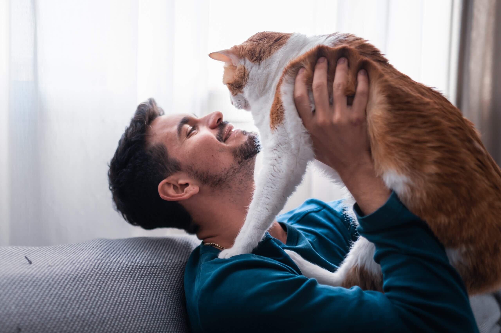
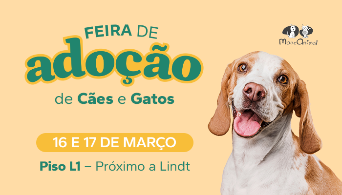

Conheça o Pet Sintonia
No Pet Sintonia, conectamos pets resgatados a novos lares amorosos, oferecendo suporte completo durante o processo de adoção. Transforme a vida de um pet e encontre um amigo leal conosco.
Quer fazer parte dessa corrente do bem e adotar? Entenda como funciona:

Preparação do Lar para Adoção
Antes de receber seu novo pet, prepare seu lar com itens essenciais como cama,tigelas de água e comida, brinquedos, itens de higiene e um espaço seguro. Garantir um ambiente acolhedor e seguro ajudará na adaptação do pet e proporcionará um começo feliz para a nova vida juntos.
